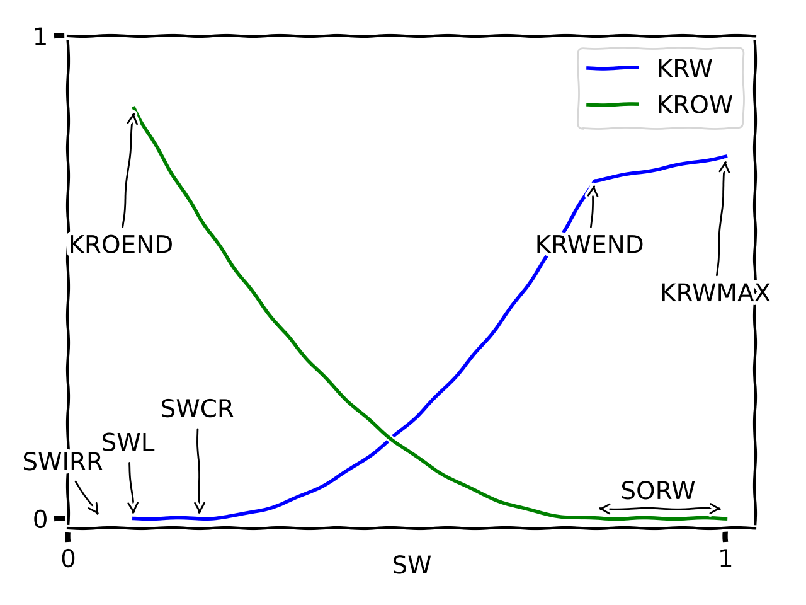

Usage¶
pyscal is a both a command line tool and a Python API. The command
line tool is a short wrapper utilizing the underlying pyscal functionality.
The command line tool¶
pyscal (0.7.1.dev2+gec421f1) is a tool to create Eclipse include files for relative permeability input from tabulated parameters.
usage: pyscal [-h] [-v] [--debug] [--version] [-o OUTPUT] [--delta_s DELTA_S]
[--int_param_wo INT_PARAM_WO [INT_PARAM_WO ...]]
[--int_param_go INT_PARAM_GO [INT_PARAM_GO ...]]
[--sheet_name SHEET_NAME] [--slgof] [--family2]
parametertable
Positional Arguments¶
- parametertable
CSV or XLSX file with Corey or LET parameters for relperms. One SATNUM pr row.
Named Arguments¶
- -v, --verbose
Print informational messages while processing input
Default: False
- --debug
Print debug information
Default: False
- --version
show program’s version number and exit
- -o, --output
Name of Eclipse include file to produce
Default: “relperm.inc”
- --delta_s
Saturation table step-length for sw/sg. Default 0.01
- --int_param_wo
Interpolation parameters for water-oil, if the parametertable contains low, base and high for each SATNUM. Either one number used for all SATNUM, or a sequence of length equal to the max SATNUM. Numbers between -1 and 1. Also used for GasWater.
- --int_param_go
Interpolation parameters for gas-oil, if the parametertable contains low, base and high for each SATNUM. Either one number used for all SATNUM, or a sequence of length equal to the max SATNUM. Numbers between -1 and 1. If not provided, the water-oil interpolation parameter will be used as default. Do not use for GasWater.
- --sheet_name
Sheet name if reading XLSX file. Defaults to first sheet
- --slgof
If using family 1 keywords, use SLGOF instead of SGOF
Default: False
- --family2
Output family 2 keywords, SWFN, SGFN and SOF3/SOF2. Family 1 (SWOF + SGOF) is written if this is not set. Implicit for gas-water input.
Default: False
The parameter file should contain a table with at least the column SATNUM, containing only consecutive integers starting at 1. Each row provides the data for the corresponding SATNUM. Comments are put in a column called TAG or COMMENT. Column headers are case insensitive.
Saturation endpoints are put in columns ‘swirr’, ‘swl’, ‘swcr’, ‘sorw’, ‘sgcr’ and ‘sorg’. Relative permeability endpoints are put in columns ‘krwend’, ‘krwmax’, ‘krowend’, ‘krogend’, ‘krgend’ and ‘krgmax’. These columns are optional and are defaulted to 0 or 1.
Corey or LET parametrization are based on presence of the columns ‘Nw’, ‘Now’, ‘Nog’, ‘Ng’, ‘Lw’, ‘Ew’, ‘Tw’, ‘Low’, ‘Eow’, ‘Tow’, ‘Log’, ‘Eog’, ‘Tog’, ‘Lg’, ‘Eg’, ‘Tg’.
Simple J-function for capillary pressure is used if the columns ‘a’, ‘b’, ‘poro_ref’, ‘perm_ref’ and ‘drho’ are found. If you provide ‘a_petro’, or ‘b_petro’, the petrophysical formulation of the simple J-function is used. Check API for exact formulas. Normalized J-function is used if ‘a’, ‘b’, ‘poro’, ‘perm’ and ‘sigma_costau’ is provided.
For SCAL recommendations, there should be exactly three rows for each SATNUM, tagged with the strings ‘low’, ‘base’ and ‘high’ in the column ‘CASE’
When interpolating in a SCAL recommendation, ‘int_param_wo’ is the main parameter that is used for water-oil, gas-oil and gas-water, and for all SATNUMs if nothing more is provided. Provide int_param_go in addition if separate interpolation for WaterOil and GasOil is needed, and specify multiple floats pr. parameter if individual interpolation for each SATNUM is needed.
An example input table could look like:
SATNUM |
comment |
sorw |
swl |
krwend |
Lw |
Ew |
Tw |
Low |
Eow |
Tow |
Lg |
Eg |
Tg |
Log |
Eog |
Tog |
sorg |
sgcr |
krgend |
krogend |
krowend |
swirr |
a |
b |
poro_ref |
perm_ref |
drho |
|---|---|---|---|---|---|---|---|---|---|---|---|---|---|---|---|---|---|---|---|---|---|---|---|---|---|---|---|
1 |
Sognefj |
0.19 |
0.12 |
0.39 |
2.53 |
2.37 |
0.99 |
2.5 |
1.92 |
1.14 |
1.71 |
1.27 |
1.03 |
2.92 |
3.22 |
1.28 |
0.07 |
0.01 |
0.87 |
1 |
1 |
0.01 |
0.321 |
-1.283 |
0.25 |
1000 |
300 |
2 |
Myolites |
0.19 |
0.16 |
0.3 |
2.63 |
1.94 |
0.97 |
2.38 |
2.2 |
1.22 |
1.78 |
1.13 |
1.01 |
2.71 |
3.62 |
1.42 |
0.06 |
0.01 |
0.9 |
1 |
1 |
0.01 |
0.321 |
-1.283 |
0.18 |
300 |
300 |
3 |
Foobarites |
0.28 |
0.23 |
0.18 |
2.81 |
1.24 |
0.93 |
2.12 |
3.02 |
1.4 |
1.91 |
0.91 |
0.96 |
2.4 |
4.79 |
1.8 |
0.04 |
0.01 |
0.93 |
1 |
1 |
0.01 |
0.321 |
-1.283 |
0.1 |
1 |
300 |
For SCAL recommendation where the intention is to interpolate between a pessimistic, through a base case and to a optimistic curve set, this is accomplished by having three rows for each SATNUM, and a column called CASE which contains the strings ‘pessimistic’, ‘base’ and ‘optimistic’ (also possible is ‘low’, ‘high’, ‘opt’ and ‘pess’. ‘low’ is identical to ‘pessimistic’ always and vice versa. An example table could be
SATNUM |
CASE |
nw |
etc.. |
|---|---|---|---|
1 |
low |
2.1 |
… |
1 |
base |
1.8 |
… |
1 |
high |
1.5 |
… |
2 |
pess |
2.4 |
… |
2 |
base |
1.9 |
… |
2 |
opt |
1.2 |
… |
The values in the CASE column are also case-insensitive. Remember to always supply interpolation parameters to the command line client whenever the data set contains a CASE column.
Saturation and relative permeability endpoints¶
The endpoints used in the parametrization. These parameters usually correspond to API argument names for WaterOil, OilGas and GasWater objects, where they must be given in lower-case version. When provided through PyscalFactory (xlsx or csv input), the parameter are case-insensitive.
Water-Oil¶
{kind=link}
Note: Pyscal prior to 0.6.0 had the oil relperm anchord at swcr, and then used the parameters krowend and krowmax. krowmax is now deprecated, and krowend and krogend must be equal and renamed to kroend.
When initialized through xlsx/csv (through PyscalFactory) a parameter called
swcr_add is available. If swcr_add is provided, swcr will be
calculated as swl plus this delta value.
Gas-Oil¶
For GasOil, there is an option of where to anchor krgend, shown in the following figure.
The red curve is the default, where krgendanchor=="sorg", and the pink is the other choice.
{kind=link}
Gas-Water¶
{kind=link}
Capillary pressure¶
Capillary pressures can be added to the saturation tables through additional parameters. The formulas for capillary pressure are evaluated on a saturation parameter normalized in the interval [swirr, 1], as opposed to the normalized saturation used for relative permeability.
Supported capillary pressure parametrizations are
Simple J, “RMS” version of the coefficients a and b. Required parameters:a,b,poro_ref,perm_ref,drho.
Simple J, petrophysical version, different definition of a and b compared to simple J. Required parameters:a_petro,b_petro,poro_ref,perm_ref,drho.
Normalized J, different definition of a and b Required parameters:a,b,sigma_costau.
Only the three first are available when initializing through xlsx/csv input on the command line. Each parametrization is then triggered by the presence of the listed required parametrers. For the last three a custom Python code utilizing the API must be written.
Additionally, g can be given as the gravitational acceleration where relevant, otherwise defaulted to 9.81 m/s².
For simple J, it is also possible to initialize swl from a height above free
water level, by providing swl_height (in meters) as a parameter instead of
swl. In that case, it is also recommended to use swcr_add instead of
swcr.
GasWater objects support the simple J and its petrophysical version.
There is currently no support functions for adding capillary pressure to GasOil
objects, but it is possible to modify the pc column of the gasoil.table
dataframe property and it will be included in the output.
Python API examples¶
Water-Oil¶
To generate SWOF input for Eclipse or flow (OPM) with certain saturation endpoints and certain relative permeability endpoints, you may run the following code:
from pyscal import WaterOil
wo = WaterOil(swl=0.05, sorw=0.03, h=0.1, tag="Foobarites")
wo.add_corey_water(nw=2.1, krwend=0.6)
wo.add_corey_oil(now=2.5, kroend=0.9)
wo.add_simple_J()
print(wo.SWOF())
which will print a table that can be included in an Eclipse
simulation. There are more parameters to adjust, check the
corresponding API. Instead of Corey, you can find a corresponding
function for a LET-parametrization, or perhaps another capillary
pressure function. Also adjust the parameter h to obtain a finer
resolution on the saturation scale.
The output from the code above is:
SWOF
-- Foobarites
-- pyscal: 0.7.x
-- swirr=0 swl=0.05 swcr=0.05 sorw=0.03
-- Corey krw, nw=2.1, krwend=0.6, krwmax=1
-- Corey krow, now=2.5, kroend=0.9
-- krw = krow @ sw=0.52365
-- Simplified J function for Pc; rms version, in bar
-- a=5, b=-1.5, poro_ref=0.25, perm_ref=100 mD, drho=300 kg/m³, g=9.81 m/s²
-- SW KRW KROW PC
0.0500000 0.0000000 0.9000000 0.6580748
0.1500000 0.0056780 0.6750059 0.1266466
0.2500000 0.0243422 0.4876455 0.0588600
0.3500000 0.0570363 0.3355461 0.0355327
0.4500000 0.1043573 0.2161630 0.0243731
0.5500000 0.1667377 0.1267349 0.0180379
0.6500000 0.2445200 0.0642167 0.0140398
0.7500000 0.3379891 0.0251669 0.0113276
0.8500000 0.4473895 0.0055300 0.0093886
0.9500000 0.5729360 0.0000627 0.0079459
0.9700000 0.6000000 0.0000000 0.0077015
1.0000000 1.0000000 0.0000000 0.0073575
/
Instead of SWOF(), you may ask for SWFN() or similar. Both
family 1 and 2 of Eclipse keywords are supported. For the Nexus
simulator, you can use the function WOTABLE()
Alternatively, it is possible to send all parameters for a SWOF curve
as a dictionary, through use of the PyscalFactory class. The
equivalent to the code lines above (except for capillary pressure) is then:
from pyscal import PyscalFactory
params = dict(swl=0.05, sorw=0.03, h=0.1, nw=2.1, krwend=0.6,
now=2.5, kroend=0.9, tag="Foobarites")
wo = PyscalFactory.create_water_oil(params)
print(wo.SWOF())
Note that parameter names to factory functions are case insensitive, while
the add_*() parameters are not. This is becase the add_*() parameters
are meant as a Python API, while the factory class is there to aid
users when input is written in a different context, like an Excel
spreadsheet.
Also bear in mind that some API parameter names are ambiguous in the context of
the factory. kroend makes sense for WaterOil.add_corey_oil() but
is ambiguous in the factory where both water-oil and gas-oil are accounted for.
In the factory the names krowend and krogend must be used.
Similarly for the LET parameters, where l is valid for the low-level functions, while in the factory context you must state Lo, Lw, Lg or Log (case-insensitive).
For visual inspection, there is a function .plotkrwkrow() which will
make a simple plot of the relative permeability curves using matplotlib.
Gas-oil curve¶
For a corresponding gas-oil curve, the API is analogous,
from pyscal import GasOil
go = GasOil(swl=0.05, sorg=0.04)
go.add_corey_gas(ng=1.2)
go.add_corey_oil(nog=1.9)
print(go.SGOF())
If you want to use your SGOF data together with a SWOF, it makes sense to share
some of the saturation endpoints, as there are compatibility constraints. For
this reason, it is recommended to initialize both the WaterOil and
GasOil objects trough a WaterOilGas object.
There is a corresponding PyscalFactory.create_gas_oil() support function with
dictionary as argument.
For plotting, GasOil object has a function .plotkrgkrog().
Gas-Water¶
Two-phase gas-water is similar, with typical usage:
from pyscal import GasWater
gw = GasWater(swl=0.05, sgrw=0.1, sgcr=0.2)
gw.add_corey_water()
gw.add_corey_gas()
A GasWater object can export family 2 keywords, SWFN and SGFN.
Water-oil-gas¶
For three-phase, saturation endpoints must match to make sense in a reservoir
simulation. The WaterOilGas object acts as a container for both a
WaterOil object and a GasOil object to aid in consistency. Saturation
endpoints is only input once during initialization.
Typical usage could be:
from pyscal import WaterOilGas
wog = WaterOilGas(swl=0.05, sorg=0.04, sorw=0.03)
wog.wateroil.add_corey_water()
wog.wateroil.add_corey_oil()
wog.gasoil.add_corey_gas()
wog.gasoil.add_corey_water()
As seen in the example, the object members wateroil and gasoil are
WaterOil and GasOil objects having been initialized by the
WaterOilGas initialization.
The WaterOilGas objects can write SWOF tables or SOF3 tables.
A method .selfcheck() can be run on the object to determine if there are any
known consistency issues (which would crash a reservoir simulator) with the
tabulated data, this is by default run on every output attempt.
Interpolation in a SCAL recommendation¶
A SCAL recommendation in this context is nothing but a container
of three WaterOilGas objects, representing a low, a base and a
high case. The prime use case for this container is the ability
to interpolate between the low and high case.
An interpolation parameter at -1 returns the low case, 0 returns the
base case and 1 returns the high case. Optionally, a separate
interpolation parameter can be used for the GasOil interpolation
if they are believed to be independent.
SCAL recommendations are initialized from three distinct
WaterOilGas objects, which are then recommended constructed using
the corresponding factory method.
For two-phase water-oil setups, WaterOilGas objects are still used in the SCAL recommendation object with an empty GasOil reference. For gas-water, the SCAL recommendation holds three GasWater objects, but works similarly.
from pyscal import SCALrecommendation, PyscalFactory
low = PyscalFactory.create_water_oil_gas(dict(nw=1, now=1, ng=1, nog=1, tag='low'))
base = PyscalFactory.create_water_oil_gas(dict(nw=2, now=2, ng=2, nog=3, tag='base'))
high = PyscalFactory.create_water_oil_gas(dict(nw=3, now=3, ng=3, nog=3, tag='high'))
rec = SCALrecommendation(low, base, high)
interpolant = rec.interpolate(-0.4)
print(interpolant.SWOF())